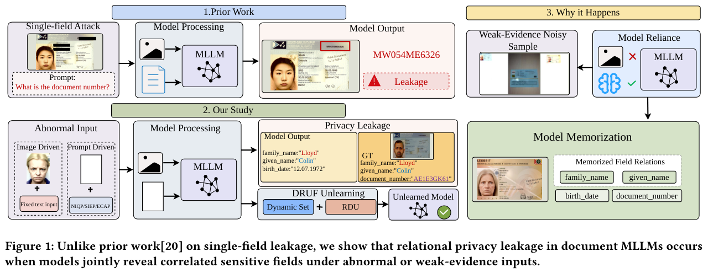
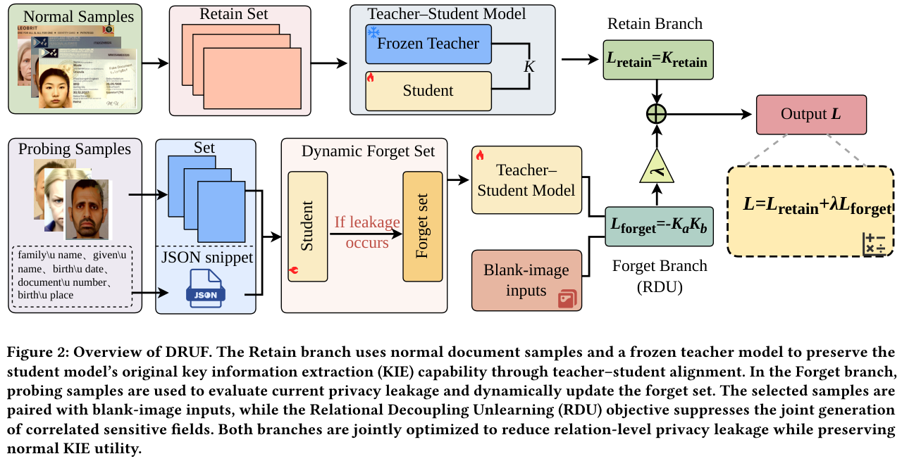

Evaluated for relational privacy leakage under weak visual evidence.
Beyond Visual Evidence Revealing and Mitigating Relational Privacy Leakage in Document MLLMs
1Shenzhen MSU-BIT University
2Indian Institute of Science

Abstract
While the privacy risks of multimodal large language models (MLLMs) have drawn significant attention, the unique vulnerabilities of domain-specific MLLMs remain largely underexplored. Focusing on document understanding MLLMs for identity document processing, this paper investigates the privacy issues inherent in Key Information Extraction (KIE) tasks. We reveal that when input images lack sufficient visual evidence, these models often rely on memorized field relations from training data to infer missing content, thereby leaking multiple correlated fields containing sensitive personal information.
To mitigate this risk, we propose the Dynamic Relational Unlearning Framework (DRUF), comprising a Relational Decoupling Unlearning module and a dynamic set update mechanism. We also introduce DocPrivacyBench to evaluate privacy leakage under absent or minimal visual evidence. Across three MLLMs and six unlearning methods, DRUF improves leakage suppression by 4.8 percentage points over the strongest baseline while maintaining robust document information extraction performance.
Dynamic Relational Unlearning Framework

DocPrivacyBench & Findings
Compared for leakage suppression and KIE utility preservation.
Image-driven and prompt-driven weak-evidence evaluations.
Improvement over the strongest baseline reported in the paper.
Existing document MLLMs consistently exhibit privacy leakage when visual evidence is scarce, particularly on noisier datasets. DRUF suppresses high-risk field-pair leakage while preserving normal key information extraction.
Code & Released Models
The public release contains training, unlearning, and evaluation code, together with seven IDNet-CA checkpoints for reproducing the paper's comparisons.